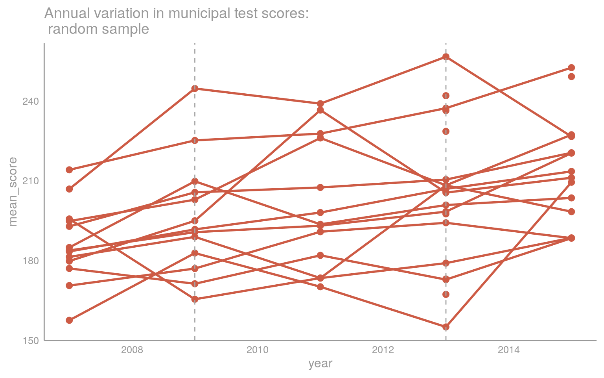

Chapter 4 Electoral Acccountability
4.1 Introduction
In this chapter, I focus on the final link in the causal mechanism of my theory: does improving the quality of public services (education) reward politicians electorally? If so, a key assumption of the model is confirmed: good performance in the first term rewards incumbents with reelection. The empirical test presented here builds on an extensive data collection process, done in active collaboration with Matheus Soldi Hardt from the University of São Paulo.
Merging this educational dataset with electoral outcomes, I provide an empirical test of whether incumbent politicians are more likely to stay in office when improvements in educational services occurs. This builds on a growing literature on electoral accountability and public service provision in the developing world.77 There are good reasons to be skeptical of that final link. The empirical record has been decidedly mixed: while some studies suggest that electoral incentives reduce corruption and boost economic growth (Ferraz and Finan (2011), Besley and Case (1995)), others have found that providing voters with information on incumbent performance (positive or negative) has no effect in changing electoral outcomes ((???), (???)).
I find confirmation that indeed Before starting my empirical analysis, I review the relevant literature on the topic of electoral accountability and its intersection with public goods provision.
4.2 From clientelism to electoral (un)accountability
Starting with Barro (1973), political economists have sought to model how reelection as an institutional feature can potentially induce “good” behavior by politicians. The key feature in these models is a sequential structure and a principal-agent dynamic, where the possibility of reelection motivates office-minded politicians (agents) to provide in their first term the public goods voters (principals) desire, and be rewarded by retaining their office for the second term.78
With few exceptions, much of this electoral accountability work has remained purely theoretical, with sparse empirical test of their propositions.79 Particularly salient is a lack of validation in the context of the developing world, where the predominant mode of analyzing electoral dynamics is through the theoretical lens of clientelism.80 There are subtle but important differences between these two analytical frameworks worth highlighting before delving into empirical analysis.
Scholars engaging with the problematic of clientelism are principally concerned with patron-client relations.81 In particular, the analytical focus is on who gets what in the act of redistribution by a politician (patron) to voters (clients). Debates on the quality of public goods is incidental, at times noting that the allocation of patronage can have a detrimental effect on public goods provision.82 A narrow focus on these clientelistic relationships forecloses the analysis of electoral accountability through performance: as long as a sufficient mass of voters are bought-off by a politician, she secures reelection.83
The repertoire of strategies for reelection, particularly for incumbents, goes far beyond private transactions between brokers or clients. Some scholars have problematized the distinction between public and private goods outlined in Stokes et al. (2013), arguing that politicians often engage in a mix of both.84 For instance, Magaloni, Diaz-Cayeros, and Estévez (2007) argues that politicians can diversify their portfolio of public and private goods distribution in order to minimize the risk of each strategy, drawing from financial theories of portfolio allocation, with an empirical test in Mexico. More starkly, Lizzeri and Persico (2001) model how politicians opt for either public goods provision or vote-buying according to electoral rules.
Empirically, it is clear that voters are not only bought off, but also care about public goods provision.85 The question is if improvements in the delivery of these goods have an effect on the incumbent’s probability of reelection. Models of electoral accountability are often focused on comparative statics: does improving the information environment or introducing term limits induce changes in incumbent behavior?86 Our question is both narrow and foundational: does exerting effort to improve education improve reelection prospects?
4.3 Measuring performance
As outlined in chapter X, there is significant intermunicipal and intertemporal variation in test scores. We illustrate these trends by randomly sampling ten municipalities and plotting the change in municipal average test scores across time. There is a clear serial correlation, as well as an upward trend in municipal average test scores.

The goal of the estimation is to capture the effect of inter-term changes in education test scores on the probability of the incumbent being reelected. Given these conditions, I opt for a first-differences approach to estimate the change in vote share of the incumbent as a result of changes in the educational performance during her mandate.
Conclusion
Barro, Robert J. 1973. “The Control of Politicians: An Economic Model.” Public Choice 14 (1): 19–42.
Besley, Timothy, and Anne Case. 1995. “Does Electoral Accountability Affect Economic Policy Choices? Evidence from Gubernatorial Term Limits.” The Quarterly Journal of Economics 110 (3): 769–98.
Ferraz, Claudio, and Frederico Finan. 2011. “Electoral Accountability and Corruption: Evidence from the Audits of Local Governments.” American Economic Review 101 (4): 1274–1311.
Lizzeri, Alessandro, and Nicola Persico. 2001. “The Provision of Public Goods Under Alternative Electoral Incentives.” American Economic Review, 225–39.
Magaloni, Beatriz, Alberto Diaz-Cayeros, and Federico Estévez. 2007. “Clientelism and Portfolio Diversification: A Model of Electoral Investment with Applications to Mexico.” Patrons, Clients, and Policies: Patterns of Democratic Accountability and Political Competition, 182–205.
Stokes, Susan C., Thad Dunning, Marcelo Nazareno, and Valeria Brusco. 2013. Brokers, Voters, and Clientelism: The Puzzle of Distributive Politics. Cambridge University Press.